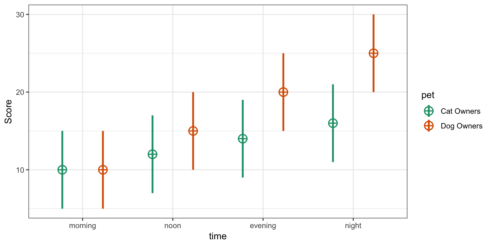
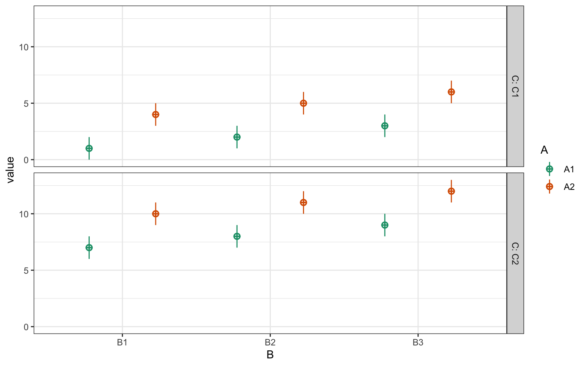
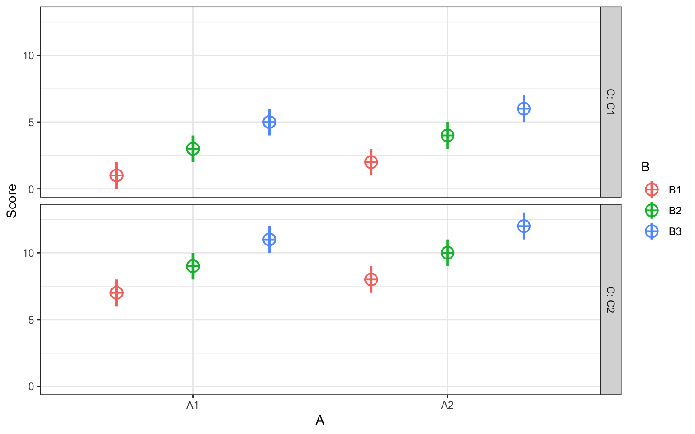
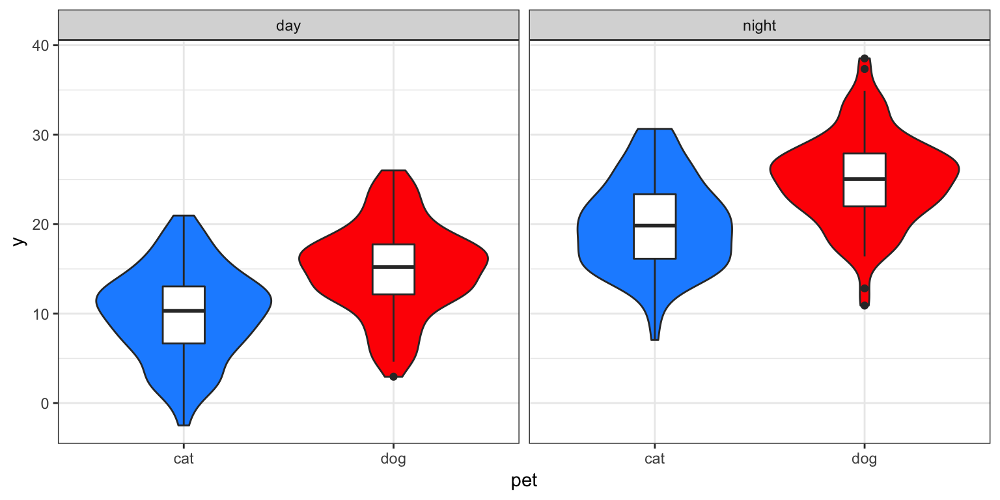
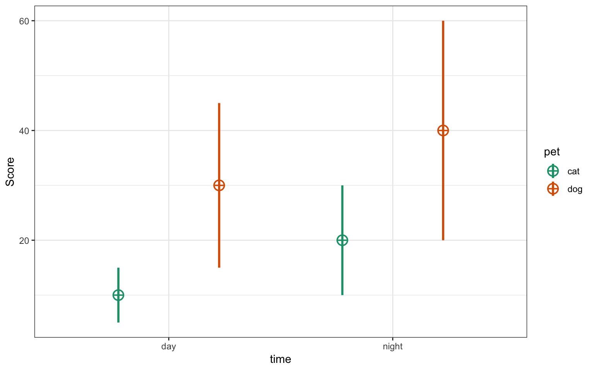
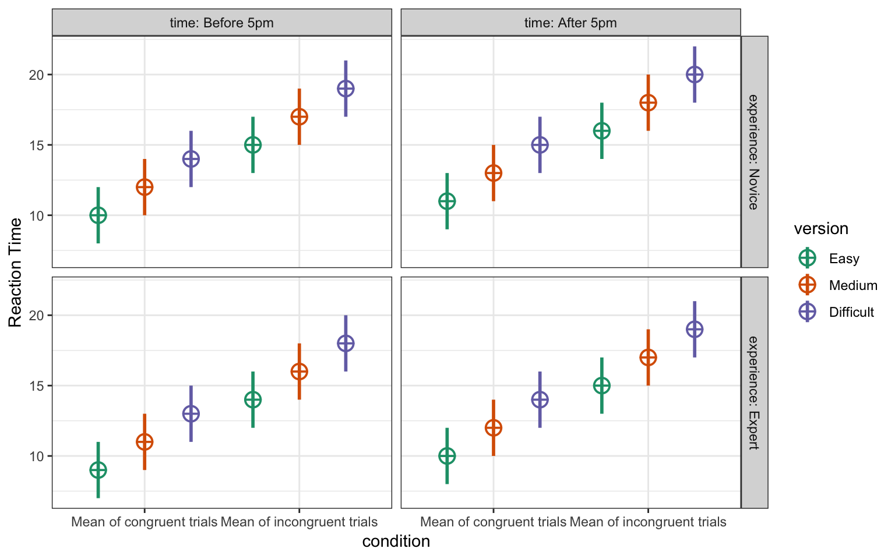

The sim_design() function creates a dataset with a specific between- and within-subjects design.
For example, the following creates a 2w*2b design with 100 observations in each cell. The between-subject factor is pet with two levels (cat and dog). The within-subject factor is time with two levels (day and night).
The data is sampled from a population where the mean for the cat_day cell is 10, the mean for the cat_night cell is 20, the mean for the dog_day cell is 15, and the mean for the dog_night cell is 25. All cells have a SD of 5 and all within-subject cells are correlated r = 0.5.
between <- list(pet = c(cat = "Cat Owners",
dog = "Dog Owners"))
within <- list(time = c("morning", "noon", "evening", "night"))
mu <- data.frame(
cat = c(10, 12, 14, 16),
dog = c(10, 15, 20, 25),
row.names = within$time
)
df <- sim_design(within, between,
n = 100, mu = mu, sd = 5, r = .5,
empirical = TRUE, plot = TRUE)
If you don’t feel like naming your factors and levels, you can just put in a vector of levels. So you can make a quick 2w*3w*2b with the following code.

You can specify between-subject and within-subject factors as a list of vectors where the item names are the factor labels and the vectors are the level labels.
between <- list(
pet = c("cat", "dog")
)
within <- list(
time = c("day", "night")
)
df <- sim_design(within, between, mu = 1:4)
You can also specify factors as a list of named vectors or lists where the item names are the factor labels, the vector names are the level labels that are used in the data table, and the vector items are the long labels for a codebook or plot.
between <- list(
pet = c(cat = "Is a cat person", dog = "Is a dog person")
)
within <- list(
time = c(day = "Tested during the day", night = "Tested at night")
)
df <- sim_design(within, between, mu = 1:4)
The check_design() function converts this to the fully expanded version; it checks your design specification when you run sim_design() or you can run it on its own to create a validated design list. You can view this in JSON format using the function json_design().
design <- check_design(within, between, n = 10,
mu = 1:4, sd = 1:4, r = 0.5, plot = FALSE)
json_design(design, pretty = TRUE)
#> {
#> "within": {
#> "time": {
#> "day": "Tested during the day",
#> "night": "Tested at night"
#> }
#> },
#> "between": {
#> "pet": {
#> "cat": "Is a cat person",
#> "dog": "Is a dog person"
#> }
#> },
#> "dv": {
#> "y": "Score"
#> },
#> "id": {
#> "id": "Subject ID"
#> },
#> "n": {
#> "cat": 10,
#> "dog": 10
#> },
#> "mu": {
#> "cat": {
#> "day": 1,
#> "night": 2
#> },
#> "dog": {
#> "day": 3,
#> "night": 4
#> }
#> },
#> "sd": {
#> "cat": {
#> "day": 1,
#> "night": 2
#> },
#> "dog": {
#> "day": 3,
#> "night": 4
#> }
#> },
#> "r": {
#> "cat": [
#> [1, 0.5],
#> [0.5, 1]
#> ],
#> "dog": [
#> [1, 0.5],
#> [0.5, 1]
#> ]
#> }
#> }You can specify the Ns for each between-subject cell as a single number, named list, or data frame.
You usually want to specify n as a single number. This is N per cell, not total sample size.
Or as a data frame. You just need to get the row or column names right, but they don’t have to be in the right order.
n <- data.frame(
B2_C2 = 40,
B1_C1 = 10,
B1_C2 = 20,
B2_C1 = 30
)
design <- check_design(2, c(2,2), n = n, plot = FALSE)
str(design$n)
#> List of 4
#> $ B1_C1: num 10
#> $ B1_C2: num 20
#> $ B2_C1: num 30
#> $ B2_C2: num 40You can specify the cells as rowname or column names and check_design() will fix them. Since n has to be the same for each within-subject factor, you can specify n as a single column with any name.
The specifications for mu and sd need both within-subect and between-subject cells. You can specify these as a single numbers, a vector, a named list of named vectors or a dataframe.
An unnamed vector is a quick way to specify means and SDs, but the order relative to your between- and within-subject cells can be confusing.
between <- list(pet = c("cat", "dog"),
condition = c("A", "B"))
within <- list(time = c("day", "night"))
mu <- c(10, 20, 30, 40, 50, 60, 70, 80)
design <- check_design(within, between, mu = mu, plot = FALSE)
str(design$mu)
#> List of 4
#> $ cat_A:List of 2
#> ..$ day : num 10
#> ..$ night: num 20
#> $ cat_B:List of 2
#> ..$ day : num 30
#> ..$ night: num 40
#> $ dog_A:List of 2
#> ..$ day : num 50
#> ..$ night: num 60
#> $ dog_B:List of 2
#> ..$ day : num 70
#> ..$ night: num 80A named list of named vectors prevents confusion due to order. The levels of the between-subject factors are the list names and the levels of the within-subject factors are the vector names, but their order doesn’t matter.
mu <- list(
cat_B = c(night = 40, day = 30),
cat_A = c(day = 10, night = 20),
dog_A = c(day = 50, night = 60),
dog_B = c(day = 70, night = 80)
)
design <- check_design(within, between, mu = mu, sd = 1, plot = FALSE)
str(design$mu)
#> List of 4
#> $ cat_A:List of 2
#> ..$ day : num 10
#> ..$ night: num 20
#> $ cat_B:List of 2
#> ..$ day : num 30
#> ..$ night: num 40
#> $ dog_A:List of 2
#> ..$ day : num 50
#> ..$ night: num 60
#> $ dog_B:List of 2
#> ..$ day : num 70
#> ..$ night: num 80Alternatively, you can specify them as dataframes.
mu <- data.frame(
cat_A = c(10, 20),
cat_B = c(30, 40),
dog_A = c(50, 60),
dog_B = c(70, 80),
row.names = c("day", "night")
)
design <- check_design(within, between, mu = mu, plot = FALSE)
str(design$mu)
#> List of 4
#> $ cat_A:List of 2
#> ..$ day : num 10
#> ..$ night: num 20
#> $ cat_B:List of 2
#> ..$ day : num 30
#> ..$ night: num 40
#> $ dog_A:List of 2
#> ..$ day : num 50
#> ..$ night: num 60
#> $ dog_B:List of 2
#> ..$ day : num 70
#> ..$ night: num 80If you transpose the dataframe, this works out fine unless your within- and between-subject cells have identical names.
mu <- data.frame(
day = c(10, 30, 50, 70),
night = c(20, 40, 60, 80),
row.names = c("cat_A", "cat_B", "dog_A", "dog_B")
)
design <- check_design(within, between, mu = mu, plot = FALSE)
str(design$mu)
#> List of 4
#> $ cat_A:List of 2
#> ..$ day : num 10
#> ..$ night: num 20
#> $ cat_B:List of 2
#> ..$ day : num 30
#> ..$ night: num 40
#> $ dog_A:List of 2
#> ..$ day : num 50
#> ..$ night: num 60
#> $ dog_B:List of 2
#> ..$ day : num 70
#> ..$ night: num 80If you have any within-subject factors, you need to set the correlation for each between-cell. Here, we only have two levels of one within-subject factor, so can only set one correlation per between-cell.
r <- list(
cat_A = .5,
cat_B = .5,
dog_A = .6,
dog_B = .4
)
design <- check_design(within, between, r = r, plot = FALSE)
design$r
#> $cat_A
#> day night
#> day 1.0 0.5
#> night 0.5 1.0
#>
#> $cat_B
#> day night
#> day 1.0 0.5
#> night 0.5 1.0
#>
#> $dog_A
#> day night
#> day 1.0 0.6
#> night 0.6 1.0
#>
#> $dog_B
#> day night
#> day 1.0 0.4
#> night 0.4 1.0If you have more than 2 within-subject cells, you can specify each specific correlation in the upper right triangle of the correlation matrix as a vector.
r <- list(
B1 = c(.10, .20, .30, .40, .50, .60),
B2 = c(.15, .25, .35, .45, .55, .65)
)
design <- check_design(4, 2, r = r, plot = FALSE)
design$r
#> $B1
#> A1 A2 A3 A4
#> A1 1.0 0.1 0.2 0.3
#> A2 0.1 1.0 0.4 0.5
#> A3 0.2 0.4 1.0 0.6
#> A4 0.3 0.5 0.6 1.0
#>
#> $B2
#> A1 A2 A3 A4
#> A1 1.00 0.15 0.25 0.35
#> A2 0.15 1.00 0.45 0.55
#> A3 0.25 0.45 1.00 0.65
#> A4 0.35 0.55 0.65 1.00You can also enter the correlation matrix from cor().
within <- list(cars = c("speed", "dist"))
between <- list(half = c("first", "last"))
r <- list(
first = cor(cars[1:25,]),
last = cor(cars[26:50,])
)
design <- check_design(within, between, r = r, plot = FALSE)
design$r
#> $first
#> speed dist
#> speed 1.0000000 0.6090282
#> dist 0.6090282 1.0000000
#>
#> $last
#> speed dist
#> speed 1.0000000 0.6687654
#> dist 0.6687654 1.0000000If you set empirical = TRUE, you will get the exact means, SDs and correlations you specified. If you set empirical = FALSE or omit that argument, your data will be sampled from a population with those parameters, but your dataset will not have exactly those values (just on average).
between <- list(pet = c("cat", "dog"))
within <- list(time = c("day", "night"))
mu <- list(
cat = c(day = 10, night = 20),
dog = c(day = 30, night = 40)
)
sd <- list(
cat = c(day = 5, night = 10),
dog = c(day = 15, night = 20)
)
r <- list(cat = .5, dog = .6)
df <- sim_design(within, between, n = 100,
mu = mu, sd = sd, r = r,
empirical = TRUE)
| pet | n | var | day | night | mean | sd |
|---|---|---|---|---|---|---|
| cat | 100 | day | 1.0 | 0.5 | 10 | 5 |
| cat | 100 | night | 0.5 | 1.0 | 20 | 10 |
| dog | 100 | day | 1.0 | 0.6 | 30 | 15 |
| dog | 100 | night | 0.6 | 1.0 | 40 | 20 |
Here is a 2w*3w*2b*2b example. When you have multiple within or between factors, you need to specify parameters by cell. Cell names are the level names, in the order they are listed in the within or between arguments, separated by underscores.
Foe example, if you have one within-subject factor of condition with levels con and inc, and another within-subject factor of version wiith levels easy, med, and hard, your cell lables will be: con_easy, inc_easy, con_med, inc_med, con_hard, and inc_hard.
If you have any characters in your level names except letters and numbers, they will be replaced by a full stop (e.g., my super-good level_name will become my.super.good.level.name).
within <- list(
condition = c(con = "Mean of congruent trials", inc = "Mean of incongruent trials"),
version = c(easy = "Easy", med = "Medium", hard = "Difficult")
)
between <- list(
experience = c(novice = "Novice", expert = "Expert"),
time = c(day = "Before 5pm", night = "After 5pm")
)
mu <- data.frame(
row.names = c("con_easy", "con_med", "con_hard",
"inc_easy", "inc_med", "inc_hard"),
novice_day = 10:15,
novice_night = 11:16,
expert_day = 9:14,
expert_night = 10:15
)You can set the correlation for each between-cell to a single number.
Or you can set the full correlation matrix with a vector or matrix. Since we have 6 within-cells, this is a 6x6 matrix or a vector of the upper right 15 values.
# upper right triangle correlation specification
# inc and con have r = 0.5 within each difficultly level, 0.2 otherwise
# ce, ie, cm, im, ch, ih
triangle <- c(0.5, 0.2, 0.2, 0.2, 0.2, #con_easy
0.2, 0.2, 0.2, 0.2, #inc_easy
0.5, 0.2, 0.2, #con_med
0.2, 0.2, #inc_med
0.5) #con_hard
#inc_hard
r <- list(
novice_day = triangle,
novice_night = triangle,
expert_day = triangle,
expert_night = triangle
)You can set long = TRUE to return the data frame in long format, which is usually easier for plotting.
df <- sim_design(within, between, n = 100,
mu = mu, sd = 2, r = r,
dv = c(rt = "Reaction Time"), long = TRUE)